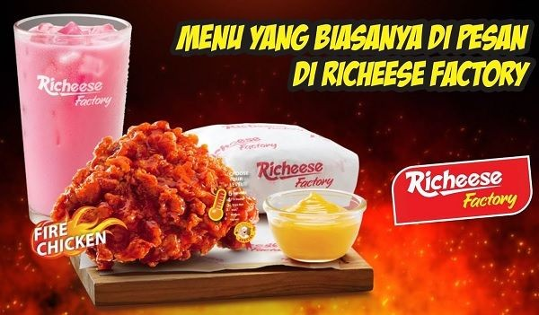
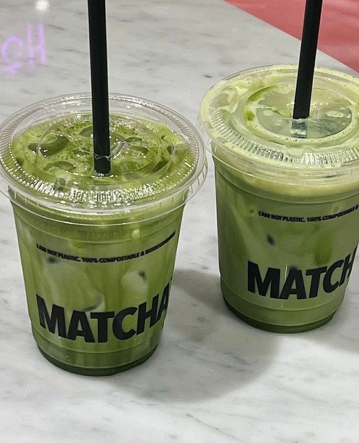

Personal

Perkenalkan, nama saya Syaira Nabila, seorang siswi kelas XI RPL 2. Saya sedang menempuh pendidikan di sekolah menengah kejuruan SMKN 9 dan fokus pada bidang Rekayasa Perangkat Lunak (RPL). Saya sangat tertarik dengan dunia teknologi, terutama dalam pengembangan perangkat lunak dan pemrograman. Melalui pembelajaran ini, saya berharap dapat mengembangkan keterampilan saya di bidang tersebut dan suatu hari dapat berkontribusi di industri teknologi.
Saya selalu berusaha untuk memberikan yang terbaik dalam setiap tugas yang saya kerjakan, baik di sekolah maupun dalam kegiatan lainnya. Selain itu, saya juga senang berkolaborasi dengan teman-teman untuk menyelesaikan proyek atau tantangan bersama. Saya berharap perjalanan saya di bidang RPL ini dapat membuka banyak kesempatan di masa depan.
Skil

Saya memiliki beberapa keterampilan yang saya kembangkan selama belajar di jurusan Rekayasa Perangkat Lunak (RPL) di kelas XI ini.
Saya memiliki keterampilan dalam pemrograman menggunakan bahasa seperti JAVA, CSS, dan HTML, serta mampu membuat aplikasi sederhana dan berbasis teks. Selain itu, saya menguasai dasar-dasar pengembangan web dengan HTML, CSS, dan JavaScript, serta memahami konsep dasar backend dan database. Saya juga terampil dalam analisis sistem, termasuk menganalisis kebutuhan pengguna dan merancang aplikasi atau sistem yang sesuai untuk memenuhi tujuan tersebut.
Favorite
Saya memiliki beberapa pilihan makanan dan minuman favorit, namun yang paling saya gemari adalah...
Makanan

Saya sangat menyukai ayam dari Richeese Factory. Rasa pedas yang khas dan menggugah selera pada setiap potongan ayamnya sungguh memanjakan lidah. Ditambah dengan saus keju spesial, kelezatan ayam ini semakin sempurna. Selain itu, paket yang sudah dilengkapi dengan nasi dan minuman ini sangat praktis, cocok untuk dinikmati sepanjang hari atau bersama orang-orang terdekat. Sensasi rasa pedas gurih yang ditawarkan benar-benar memuaskan.
Minuman

Minuman matcha adalah pilihan favorit saya. Rasa teh hijaunya yang segar dan sedikit pahit memberikan sensasi yang menenangkan dan menyegarkan. Matcha juga memiliki tekstur yang creamy, membuat setiap tegukannya terasa lebih nikmat. Selain itu, matcha dikenal memiliki banyak manfaat kesehatan, sehingga minuman ini tidak hanya lezat, tetapi juga memberikan manfaat baik bagi tubuh.